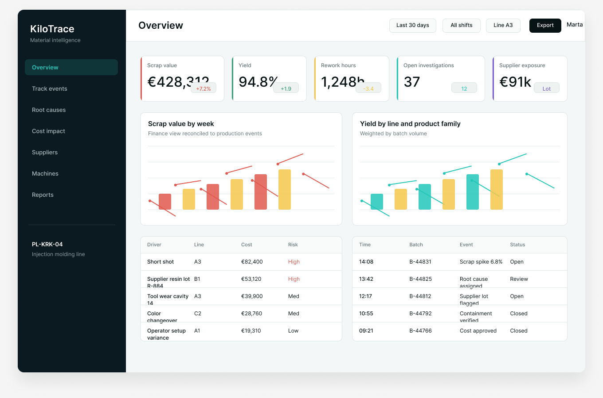
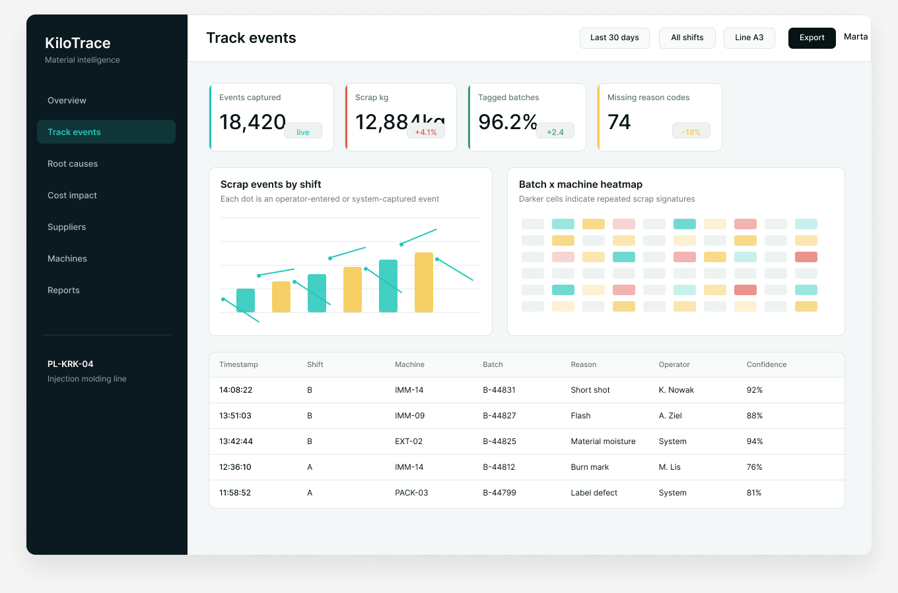

Capture events cleanly
Track scrap, rework, reason codes, batch context, and shift notes without forcing teams into another spreadsheet ritual.
KiloTrace connects scrap, rework, yield events, root-cause evidence, supplier lots, machines, shifts, and finance impact in one product-led operating layer.

Designed for manufacturers where small yield losses become serious operating cost.


 OPC UA
OPC UA
Why KiloTrace
Most plants can see the monthly loss, but not the exact chain of shift, batch, machine, supplier lot, operator step, and process condition that created it. KiloTrace turns loss into traceable evidence.
Track scrap, rework, reason codes, batch context, and shift notes without forcing teams into another spreadsheet ritual.
Correlate material lots, machines, tooling, operators, suppliers, and process telemetry into one investigation trail.
Translate production evidence into cost exposure, supplier claims, containment actions, and finance-ready reporting.
Use KiloTrace to make loss conversations specific enough for production, quality, procurement, and finance to act together.
Platform
Start with the part of the problem your plant feels most: missing event context, slow root-cause work, or finance disconnect.
Turn shift events into structured records tied to batches, machines, operators, parts, and reason codes.

Connect evidence from supplier lots, equipment, tooling, process drift, and operator notes into one cause graph.

Bridge production loss into GL accounts, supplier exposure, recovery actions, and avoidable cost forecasts.

Product screenshots
KiloTrace keeps the interface calm: compact filters, clear tables, visible cost, and investigation state that teams can actually use in daily production meetings.
Connected plant context
KiloTrace does not replace your plant stack. It connects the evidence layer across MES, ERP, quality systems, machine telemetry, and finance.
Before and after
Customer voice
We finally stopped arguing about which shift caused the loss. KiloTrace gave us one shared trail from batch event to cost.Ewa Zielińska, Quality Director, Novaplast Łódź
Pricing
Pricing is built around plants, production lines, and the level of finance and supplier recovery workflow you need.
For teams proving loss visibility and event capture on a focused process.
For plants connecting event capture, investigation, and cost impact.
For manufacturers standardizing material loss intelligence across sites.
Book a demo
Share one recent loss problem and we will map how KiloTrace would connect events, root causes, and cost recovery across your plant.
KiloTrace sp. z o.o. replies from Kraków during Central European business hours.